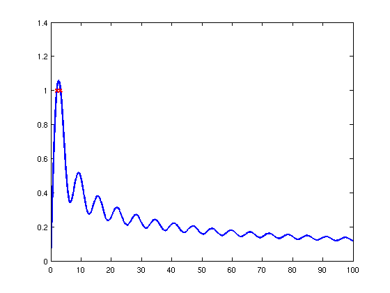
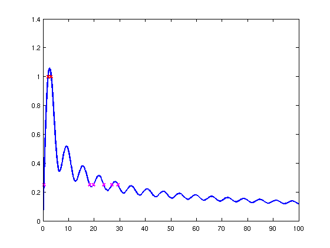

Optimization of a parameterised integral
Nick Hale, 17th October 2011
(Chebfun example opt/OptimInt.m)
This example serves to show how easy it is to solve one of the example problems from the Oxford MSc in Mathematical Modelling and Scientific Computing week 0 MATLAB 'Crash Course' using Chebfun. (And also how easy it is to make a Chebfun Example!).
PROBLEM. For what values of a does I(a) = int_{-1}^{1} sin(x) + sin(a x^2) dx = 1 ?
SOLUTION. Define the integrand as a function of x and a.
F = @(x,a) sin(x) + sin(a*x.^2);
For a given a, we can compute the integral using Chebfun's SUM command.
I = @(a) sum(chebfun(@(x) F(x,a)));
We compute the a chebfun of this result, for a ranging from 0 to 100.
Ia = chebfun(@(a) I(a),'vectorize',[0 100]);
The 'vectorize' flag is used, since I should not be evaluated with a vector.
We use Chebfun's ROOTS command to find where Ia equals 1.
r = roots(Ia-1)
r =
2.0117
3.1995
We plot this, to make sure it looks sensible.
plot(Ia,'linewidth',2), hold on plot(r,Ia(r),'xr','linewidth',2);
Since we have Ia as a chebfun, we can do other things, like find where I(a) = 0.25
r = roots(Ia-0.25) plot(r,Ia(r),'xm','linewidth',2); hold off
r =
0.3789
18.2260
19.7612
23.7538
26.9563
29.2915
 or the value of a which maximises I
m = max(Ia)
m =
1.0567
or the standard deviation of the gaps between the local minima for a between [0 100].
[y x] = min(Ia,'local');
f = std(diff(x(2:end-1)))
f =
0.0090